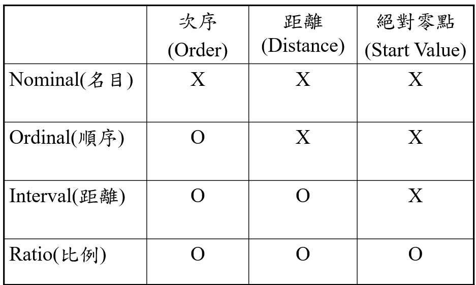

研究方法期末整理
- 問卷
- 每一個問題都是一個變數
- 評比(1－5呎度)隔頁一樣要留著
- 回答的方向要一致，如果上面都是左邊問題右邊回答，下面也要一樣
- 不能一直重複出現 → 多餘
- 問題和回答的距離不能那麼遠
- 不能沒有回答的地方
- 衡量分數與標準要講清楚
- 要有題號
- 不能太多行(盡量省一點)，成本會很高
- 回答方式要簡單一點
- 不要期待回覆者寫任何文字
- 用最省力的方式回答問題
- rank有排序，有分rate跟rank的設計，rank不會重複
- 有分底到高(1-7分)ascent, 高到底(7-1分)descent
- 問題區與回答區的比例 3:1 4:1
- 5尺度還是7尺度，全部的問卷尺度要一致
- survey的精髓
- 範圍非常大，大到幾百萬、幾十萬
- 研究的變數幾十個
- 用推論
- 如果2萬個人跟2百個人結果一樣，為甚麼要做2萬個人
- 民調
- 調查法是科學研究最常使用之方法
- 研究不一定適合用survey，很多人用不代表對
- 樣本或母群體
- 追求一般性事實
- survey沒有命題
- 個案底下看不到假設
- 在survey底下已經真正要做資料的收集了
- 操作型定義
- 用數字解釋文字
- 郵寄問卷 vs. 電腦網路
- 網路問卷完勝郵寄問卷，所以用網路問卷，對，但前提是母體都是網路使用者
- 如果母體不完全是網路的使用者，但全部用網路問卷，結果就跑掉了
- survey底下幾乎都是用封閉性的問題
- 個案研究─開放性
- 我收集的資訊越多越好 → 設計的問題越多越好
- 設計內容越多 → 回收率越低
- 設計內容越少 → 回收率越多
- 個案的對象是母體的一部份
- 量表(norms)與問卷(questionnaire)
- 量表(標準化產物)─經過嚴謹設計及信度、效度測試並在某個群體下具有代表性。(ex：魏氏量表─智力 巴氏量表)
- 經過第三方公正單位(學會、協會、政府單位)
- 個人不可能發展量表(沒有公權力)
- 大量資料蒐集 → 修正內容 → 大量資料蒐集
- 問卷(未標準化產物)─針對某研究主題而產生的問題。(未經過大眾認定)
- 小量資料蒐集 → 修正內容 → 大量資料蒐集
- 量表(標準化產物)─經過嚴謹設計及信度、效度測試並在某個群體下具有代表性。(ex：魏氏量表─智力 巴氏量表)
- Scale (尺度)
- 任何一個變數出來，第一個動作一定要問尺度
- 判斷尺度錯，分析方法也會錯
- 要走能力判斷是哪種尺度
 
- Nominal
- 你不屬於這個，就是屬於這個
- 一定是屬於分類底下
- Non-Metric data
- Ordinal
- 有次序
- Non-Metric data
- 講師 助理教授 副教授 教授
- 不一定幾年就往上升，有可能3年有的8年有的20年
- 資本額(衡量單位不一致)

- Interval
- 有次序，距離一樣
- Metric data
- 溫度、年資(衡量單位一致)

- Ratio
- 唯一例外 open 的問題
- Metric data
- 請回答者直接填寫
- Ordinal vs. Interval
- Measurement Unit
- N-2, N-1 , N , N+1 , N+2
{kind=link}
- Metric data vs. Non-Metric data
- Non-Metric data
- 屬性的資料
- Nominal、Ordinal
- 個數、百分比
- 個人基本資料(描述性)
- 分群用 → 比較 → 差異
- Metric data
- 屬量的資料
- Interval、Ratio
- 平均數、標準差
- 常態分配
- 研究主要內容(較複雜性)
- 主要研究用
- Non-Metric data
- coding
- 數字(1、2、3…)在coding上具有二種意義
- Symbol → Nominal、Ordinal
- number → Interval、Ratio


- Two-way ANOVA vs ANCOVA

- Rank vs. Rate
- Rank：在固定範圍下，通常希望這些值不會重複出現。
- Rate：在固定範圍下，這些值可以重複出現。
- 基本資料 + 主要內容
- 問卷個人基本資料─Nominal & Ordinal & Ratio
- 問卷研究主要內容─Interval & Ratio
- 回覆你的內容的人，對你的研究是不熟悉的
- 熟悉的是他自己，所以要先讓他寫基本資料 → 造成熟悉感
- 除非基本資料是敏感的問題(有時候年紀是敏感、收入也是)，才放後面。放在一開始會變成我為甚麼要告訴你?，後面也就不告訴你，變無效問卷
- 複選題

- 每個選項都是一個變數(問題)
- 每個選項轉換成Nominal設計

- 一題多問
- 避免命名兩個以上的名稱 (factor analysis)–例如：便利性及清晰性
- 忌諱出現 and , or (和、與、或)
- 一個問題一個概念
- 研究結果
- 高階管理人員支持(IV)影響組織的競爭力(DV) → 錯的
- One question ---- one variable
- 測出來的
- 不是問出來
- Proposal model vs. Refined model
- Proposal model → 前三章 before conduct study
- Refined model → 第四章最後面或第五章前面 after analysis results
- 研究的歸類
- Correlation
- H0：the more x , the more y . –有明確資料支援
- There is no significant correlation between v1 and v2 . –沒有明確資料支援
- Matrix data
- Difference
- g1(Non-Matrix data) is greater(less) the g2(Non-Matrix data) on DV1(Matrix data)\
- There is no significant difference between g1 and g2 on DV1
- Correlation
- Scale 3, 5, 7
- 越聚集的信度越大

- 信度(一致)
- 探索性 → 0.6
- 驗證性 → 0.8
- 常態分配曲線

- 1-3 切割成3塊
- 1-5 切割成5塊
- 1-7 切割成7塊
- 衡量單位比較小(單位到單位的距離)
- 變動比較小 → 變異比較小 → 信度比較高
- 越聚集的信度越大
- 回覆問題可信度(7±2)
- 回答者最多只能7±2題
- 大約每五題空一行
- 讓填卷者可以休息
- 表面效度 (Face Validity) vs. 內容效度(Content Validity)
- 沒有數字分析
- 表面效度(Face Validity) 先
- 清楚的交代你的變數來源
- 變數來源大部分都是文獻來的
- 文獻(95%)或個人經驗(5%)有清楚交代變數的來源
- 沒有testing


- 內容效度(Content Validity) 後
- The extent to which it provides adequate coverage of the topic under study
- 內容對嗎?
- 假設在做區塊鏈，結果再談別的東西
- 內容效度(有2種)
- Pretest (先) vs. Pilot Study (後)
- 相同:
- Content validity
- 相異:
- 目的
- 對象
- 人數
- Pretest：邀請field的3-5專家來幫忙看content，寫的內容是否包含了你要的 (same communication platform) → 對不對
- Pilot study：從填寫問卷的population抽取sample(10-20,1/20)看content → 懂
- 絕對不要期待母體的樣本，跟你有共同的溝通語言
- 如果抽樣出來的樣本不懂，表示母體也會不懂
- 填 → 寫下自己的意見
- 看 → 字眼的了解與否，把問題告訴研究者
- 相同:
- Pretest (先) vs. Pilot Study (後)
- Mail survey concurrent techniques
- Cover Letters
- Questionnaire Length
- Survey Sponsorship
- Return Envelopes
- Postage
- Personalization
- Anonymity
- Size,Reproduction,and Color
- Money Incentives
- Deadline Dates
- Trade -- off
- 問卷設計多寡 → 回收率高低
- Cover Letter
- Letter head (logo)
- 感謝時間
- 身份說明
- 探討主題、目的
- 對他的貢獻
- 填答方式、時間(不超過15分鐘)
- 保密（不具名）
- 整體研究（個別揭露）
- Deadline、due day (網路7天。)
- Incentive (禮卷、電話卡、筆、樂透)
- Survey Sponsorship or Advisor
- 提高回覆率

- Survey method misapplied or weaknesses
- Single-method designs where multiple (網路vs 實體)
- unsystematic and often inadequate sampling procedures
- low response rates → 致命傷
- Over-reliance on cross-sectional surveys where longitudinal surveys are really needed →過程性vs 結果性
- survey → 不要碰非機率性抽樣
- Sampling Methods(機率性)
- Simple random sampling(簡單隨機抽樣)
- 選取的過程中，母群體的每一分子被抽中的機會，都是相同而且獨立(也就是不被其他分子所影響)的。

- 依亂數表
- 編號抽籤

- 選取的過程中，母群體的每一分子被抽中的機會，都是相同而且獨立(也就是不被其他分子所影響)的。
- Stratify random sampling(分層隨機抽樣)
- 某些次團體(或稱「層」)的抽中比率，與其在母群體中所佔的比率相等。

- 分層隨機抽樣的樣本數比例差距過大
- 95%-5%
- 將5%的樣本剔除，只研究95%的部分
- 某些次團體(或稱「層」)的抽中比率，與其在母群體中所佔的比率相等。
- Systematic random sampling(系統隨機抽樣)
- 母體本身己經有排名、順序(rank、order)
- 一千大製造業，需要200
- 1000/200=5 → K
- 1-K(5) 隨便一個數字 → 3
- 從3開始，在+5，下一個是8，這樣才有200
- Cluster random sampling (群集隨機抽樣)
- 希望確定具有某些特質的個體被選為樣本。Ex:班級、學校、醫院、地理區
- 想了解全國資管所碩一的資素養 → 班為單位


- Simple random sampling(簡單隨機抽樣)
- 抽樣方法選擇
- 完全沒有 → Simple random
- 比例分配 → Stratify random
- 群集 → Cluster random
- 順序 → Systematic random
- Sampling Methods(非機率性)
- 非機率性的方法是無法推論到母體的
- 便利抽樣(convenient sampling)
- 自己便利隨便抽
- 容易挑自己熟悉的人
- 立意抽樣(Judgmental sampling)
- 研究者自己認定它可以代表母體
- 要證明可以代表母體 → 怎麼證明? → 同質性檢定
- 同質性檢定 → 分析方法
- 雪球抽樣(snow-ball sampling)
- 田野調查
- key person → more
- 要幾輪? → saturation
- Response rate

- 問卷蒐集的完整時程─至少需要二-三個月
- 研究所兩年 → 二上 proposal → 二下 survey出去 → 每年3~6月很多問卷 → 丟掉
- 過年後到4月是問卷高峰期
- 避開這時段會增加5-10%
- 提前進行問卷發放 (升二年級暑假就開始做了)
- 問卷蒐集的完整時程─至少需要二-三個月
- Valid response identification
- 全部都填3 → 問卷有效還無效?
- Repeat question
- 一樣的問題，一題填3，一題填4 → 有亂填嗎? → 不一致喔 → 信度問題喔!
- Test re-test
- 一致的要求 → 0.6(探索)? 0.8(驗證)? → 做驗證 → 0.8以上就可以
- Reliability– confirmatory > 0.8

- 1到5，每一格信度0.2，所以一個填3，一個填4，信度0.8 → 正常
- 1到5，每一格信度0.2，所以一個填3，一個填5，信度0.6 → 亂填
- Useful response vs. Missing Data
- missing data under 10% for an individual case or observation (ignore)
- 整份40題，5題沒填 -> 無效
- Variables with as little as 15% missing data are candidates for deletion
- missing data under 10% for an individual case or observation (ignore)
- Missing value
- mean
- median
- mode
- 補0 → 很糟糕
- 打 . 就好 → 程式會自己判斷
- Follow-up

- third mail沒有second mail的一半 → 小心被告騷擾
- Min sample size


- 1. Pilot test using Factor analysis
- 收集10~20，做因素分析，產生幾個因素，乘10倍就是最小樣本數
- 1. Pilot test using Factor analysis
- Analysis min sample size
- 看用甚麼方法
- Non-Response Bias
- 母體1000 -> 樣本200 → 800沒回覆
- 母體跟樣本有相同的行為
- 200跟800不一樣的行為了
- 所以可以用200推回去嗎?
- 證明200跟800有相同的行為
- 時間切割

- 證明同質型

- 網路問卷和實體問卷分頭同步進行
- 是否能合併使用? 無反應偏差的測試 → 同質性檢定
- 母群體效度(population validity) vs. 生態的效度(ecological validity)
- population validity → Model-模式
- ecological validity → Theory-理論